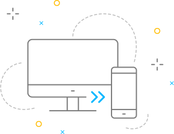

Hoppla!
Du scheinst dein Smartphone gedreht zu haben. Drehe es einfach zurück und du landest automatisch wieder in der App. Oder bist du mit einem anderen Endgerät in unserer App gelandet? Wir arbeiten mit Hochdruck an der Realisierung für weitere Endgeräte wie Tablet und PC. Bis dahin melde dich gern mit deinem Smartphone bei uns an. Wir freuen uns auf dich!
Zur Smartphone-Version: